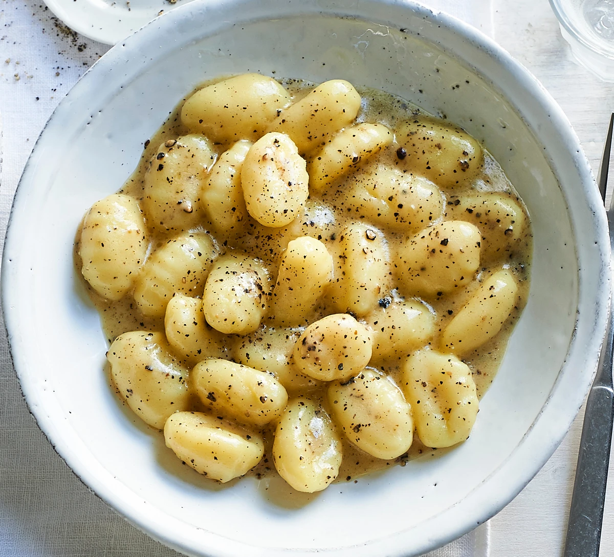

Gnoochi

Ingredients:
- 3 tbsp olive oil
- 2 aubergines, cut into 1cm chunks
- 2 garlic cloves, sliced
- 400g can plum tomatoes
- 1 tsp red wine vinegar
- pinch of chilli flakes (optional)
- pinch of sugar
- 500g gnocchi
- parmesan, or vegetarian alternative, to serve
Steps:
- Heat the oil in a deep frying pan and fry the aubergine with a
pinch of salt for 10 mins until golden brown and soft.
- Add the garlic and fry for 2 mins until smelling fragrant. Tip
in the tomatoes, then half fill the tin with water and add that
too. Stir in the vinegar, chilli flakes if using, and basil stalks.
Mash the tomatoes with a wooden spoon to break them up. Simmer for
15 mins until thickened and saucy. Season well, and check for sweetness.
Add a pinch of sugar, or a dash more vinegar, if you like.
- Boil the Napolina gnocchi in salted water for 1-2 mins until just
starting to rise to the top of the water. Drain, keeping some of
the cooking water. Add the gnocchi to the sauce with a splash of
the cooking water to loosen if necessary, then remove from the heat.
Mix the gnocchi into the sauce, then stir in some of the basil.
To serve, scatter with more basil and grate over the parmesan.
Source:
https://www.bbcgoodfood.com/recipes/gnocchi-alla-norma